Friend of Dorothy
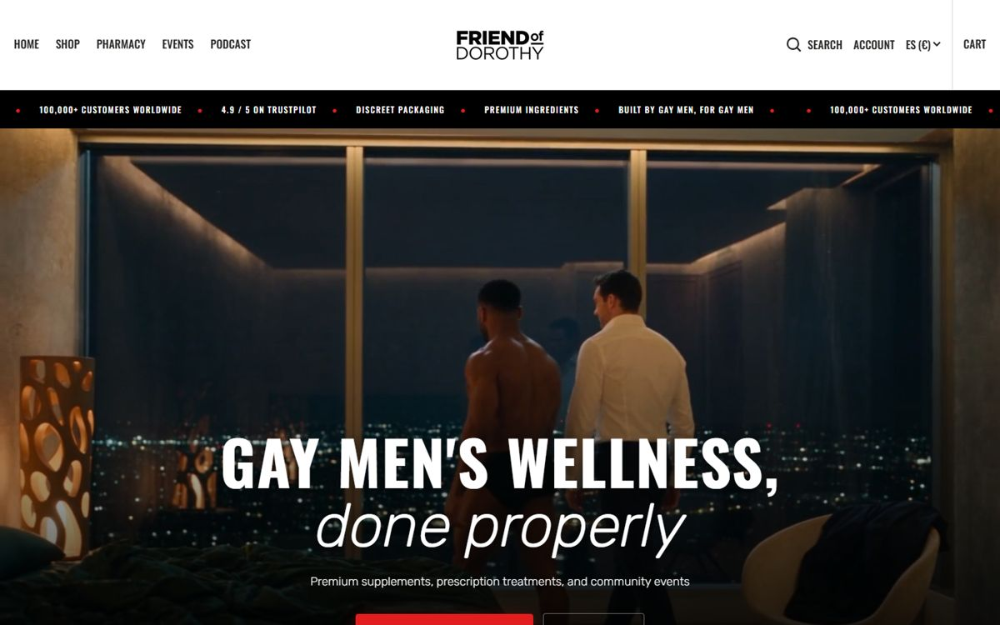
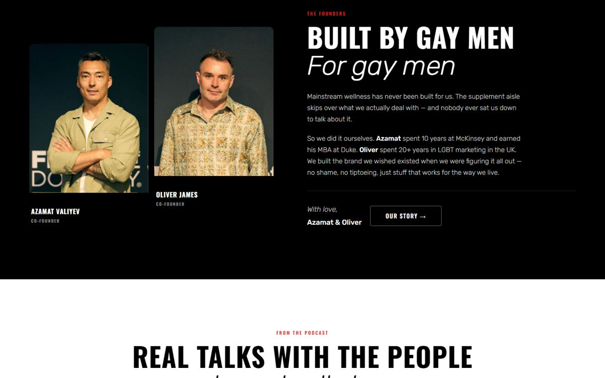
What inspires
They talk to their audience at eye level, without apologising. Each product is named after a real-life problem, the reviews section is called "What gays are saying", and a podcast with doctors and trainers adds credibility.
Email capture
No aggressive popup. The main hook is "free gifts with your first order", and sign-up happens inside the order.
First order and subscription
Free gifts with the first order, a self-service "My subscription" area, and discreet packaging as part of the promise.
Ingredient transparency
Fewer tables, more professionals: a row of doctors and nutritionists, each with a short quote. The tone is explicit and sexual; ASKEW can take the directness without the noise.
Idea for ASKEW
A "built by us, for us" section with the founders' faces, names and a personal line, in ASKEW's quiet, warm voice. This is the one thing no big brand can copy.
Huel
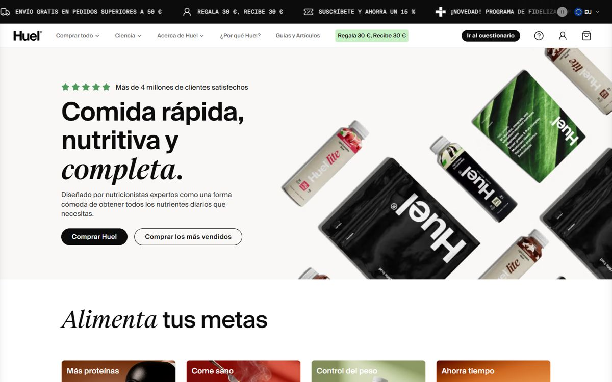
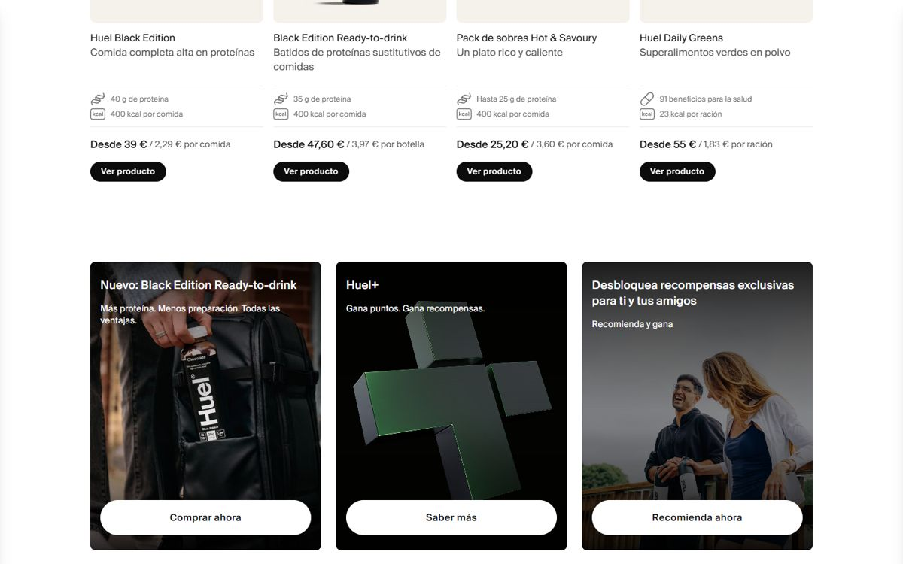
What inspires
Practical and clean. Instead of promises, numbers: how much protein, how long to prepare, what a meal costs. There is also a "why it works" section in three simple cards.
Email capture
A clear popup: "€10 off your first order" (on orders over €70) in exchange for an email. One field, one button.
First order and subscription
15% off with a subscription, a refer-a-friend programme where both sides get €30, and a points programme.
Ingredient transparency
Nutrition values appear on the product card itself, before you even click: protein, calories, price per meal.
Idea for ASKEW
Show "price per day" and grams of protein and fibre on every product, and put bring-a-friend (both sides win) right in the site's top bar, like the 25% both-ways offer.
AG1
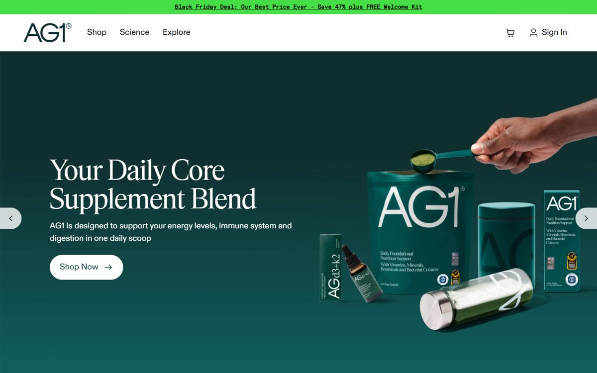
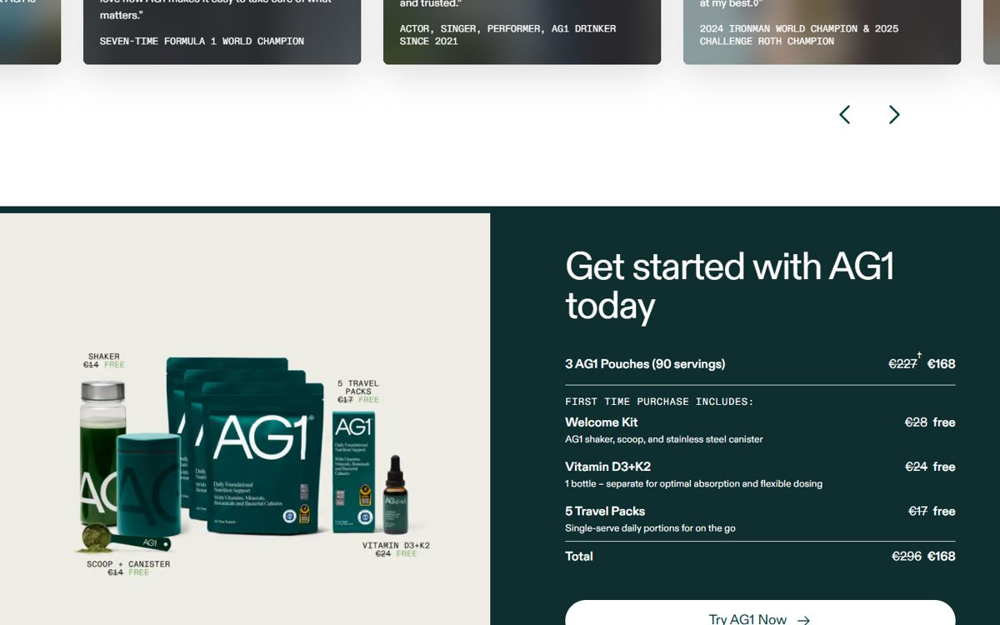
What inspires
A consistent feeling of luxury, and a clever table: "replaces up to 9 supplements", showing what you would pay for each one separately versus their price.
Email capture
Barely visible. They rely on the offer itself rather than a popup.
First order and subscription
A free welcome kit (shaker and canister) with the first order, free delivery, a flexible subscription, and a full 30-day money-back guarantee.
Ingredient transparency
A gallery of ingredient photos (vitamins, minerals, good bacteria), a "full label" button, and a research section.
Idea for ASKEW
"The founders' box": show exactly what is in the first box, with a crossed-out value next to each item, and beside it a table "instead of buying protein, fibre and a multivitamin separately".
Ritual
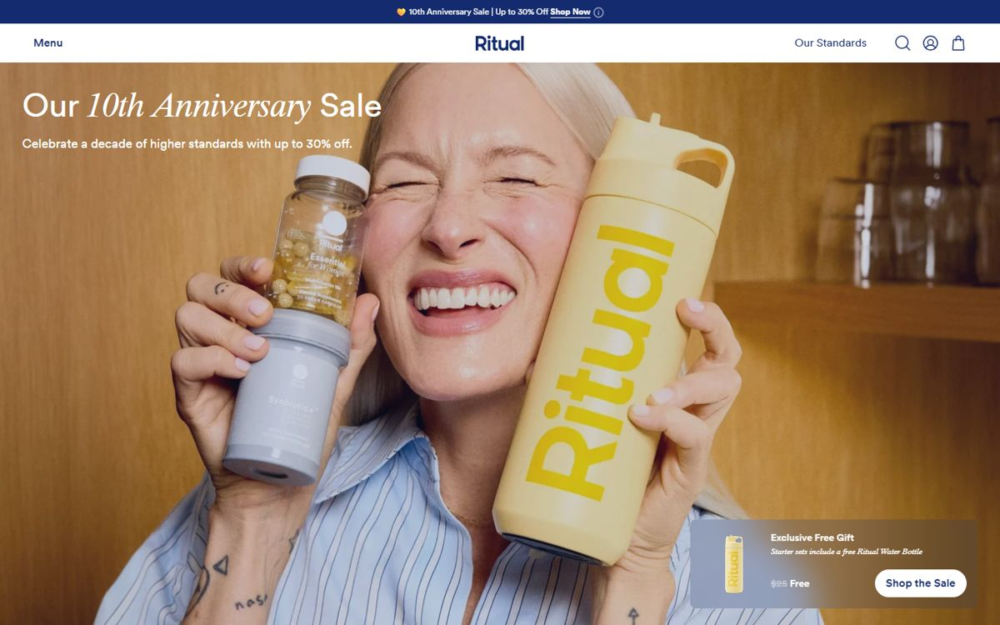
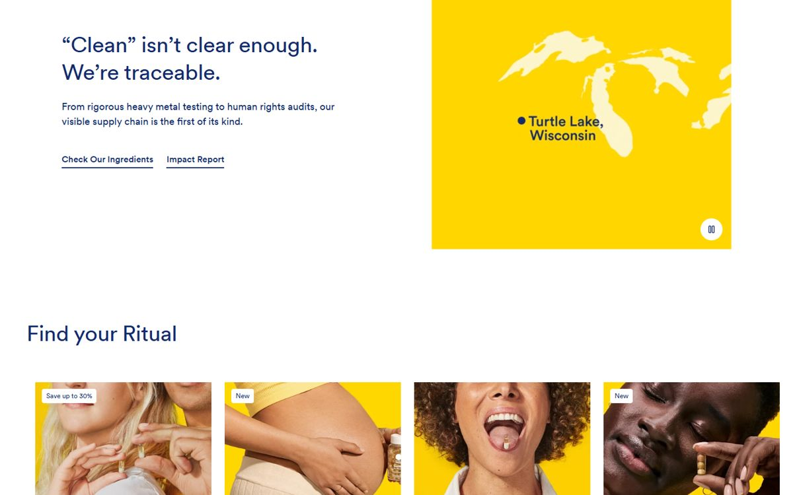
What inspires
They turned transparency into a story: a map, a row of trust icons (100% traceable ingredients, clinical studies, vegan), and the faces of the scientists behind the product.
Email capture
A simple field in the footer with a witty line: "We have high standards for emails too."
First order and subscription
Up to 30% off (a tenth-anniversary sale), and starter sets with a gift.
Ingredient transparency
Every ingredient with its source, supplier and country. Direct links to "check our ingredients" and an impact report.
Idea for ASKEW
A small map of ASKEW's ingredients: where the protein comes from, where the fibre comes from, where it is blended. And in the footer, an email line in ASKEW's voice, such as "One email a month. No nonsense."
Seed
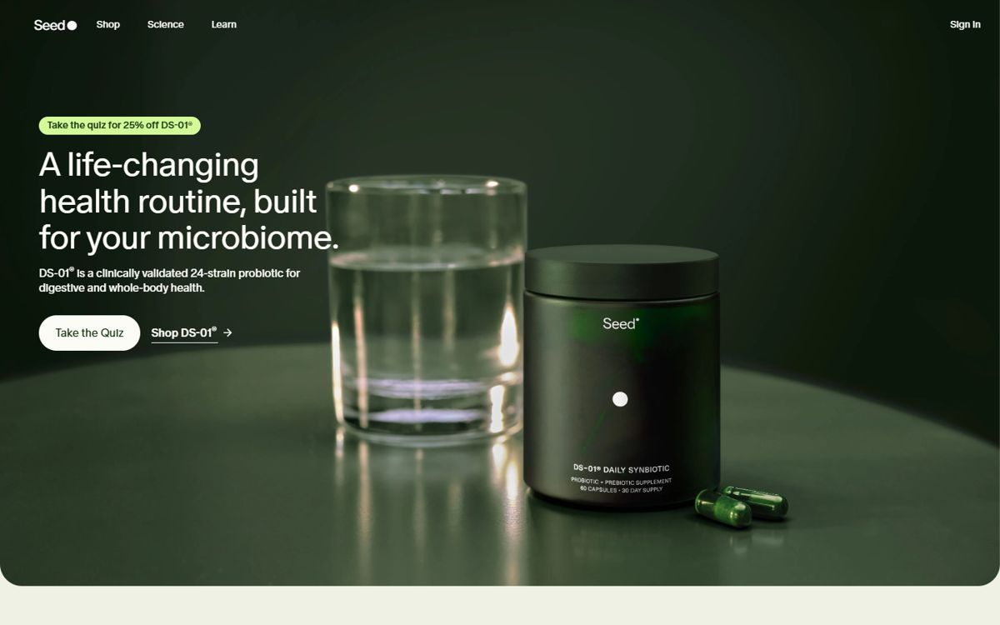
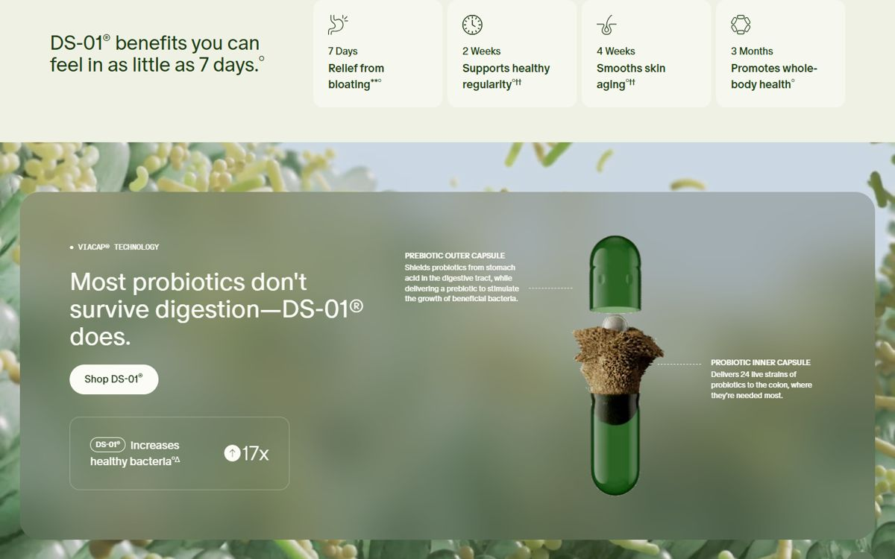
What inspires
The timeline. It tells the customer when to expect results, which keeps them subscribed in the first weeks when they don't feel much yet.
Email capture
A short quiz that ends with 25% off, and in the footer "nerdy reads for your inbox" with a single field.
First order and subscription
25% off through the quiz, 25% on bundles, and a referral programme.
Ingredient transparency
A cross-section of the capsule explaining how it works, and small, precise numbers (for example 17x more good bacteria).
Idea for ASKEW
A "what you'll feel on day 7, day 30 and day 90" timeline, on the site and in subscriber emails. It is the simplest tool for reducing cancellations in the first month.
Ka'Chava
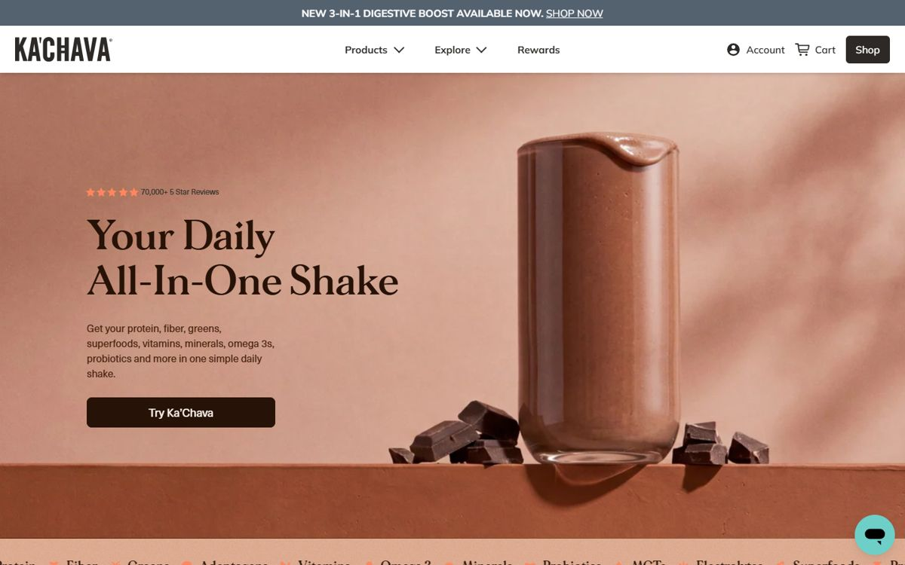
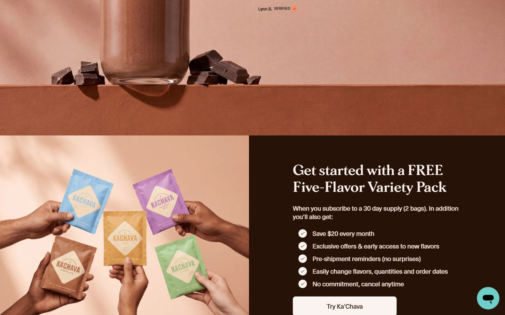
What inspires
Everything is clear and measurable: 25g protein, 6g fibre, 26 vitamins and minerals. A table "what you'd pay for all this separately" ($306 vs $120), and customer survey results in percentages.
Email capture
Not through a popup but through the offer: a subscription with "early access to new flavours".
First order and subscription
A free five-flavour pack with the first subscription, $20 saved every month, change flavour and quantity anytime, and a reminder before every delivery, "no surprises".
Ingredient transparency
A "no" row: no seed oils, no preservatives, no refined sugar. And a section on independent lab testing (heavy metals, allergens).
Idea for ASKEW
Copy the structure of the offer: one box with a short checklist, especially "reminder before every delivery" and "pause or cancel in one click". It removes the fear of committing to a subscription.
Arrae
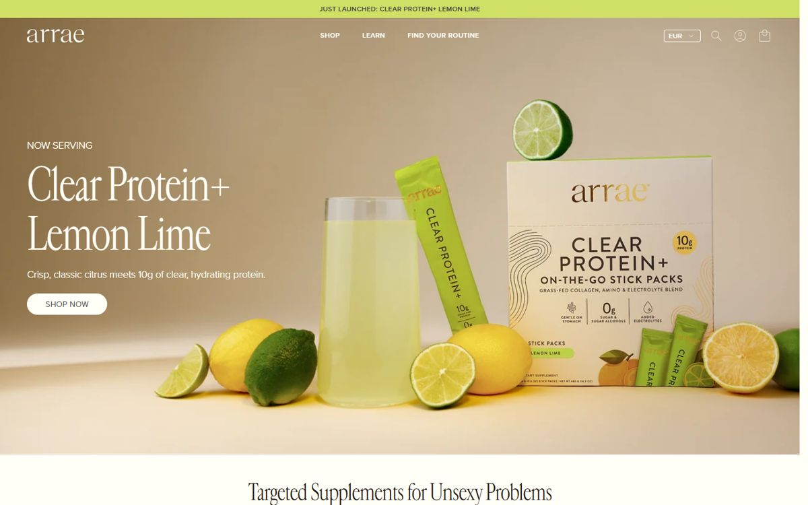
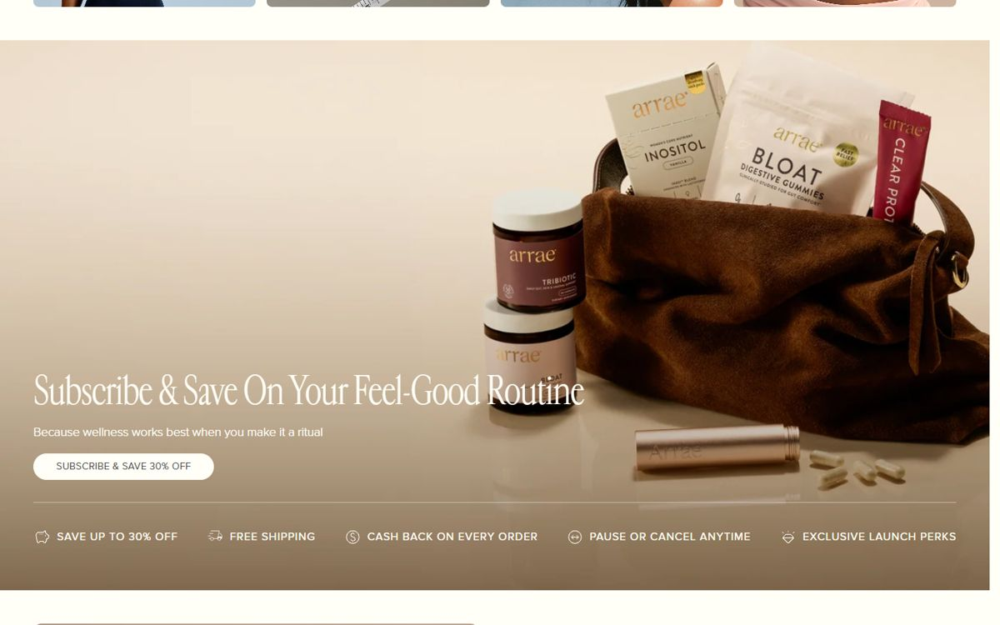
What inspires
The headline "Targeted supplements for unsexy problems". Honesty with a smile, exactly ASKEW's voice. Also a short goal picker: "tell us what you'd like support with".
Email capture
"Unlock your mystery discount" in the footer: name, email and phone.
First order and subscription
Up to 30% with a subscription, free shipping, cash back on every order, and exclusive launch perks.
Ingredient transparency
"The rigor behind every formula": every batch tested, the number of ingredients evaluated, and years of development.
Idea for ASKEW
One short subscription-benefits bar just below the top of the page. And headlines in the "unsexy problems" spirit: call things by their name (digestion, energy, muscle) without dressing them up.
Cymbiotika
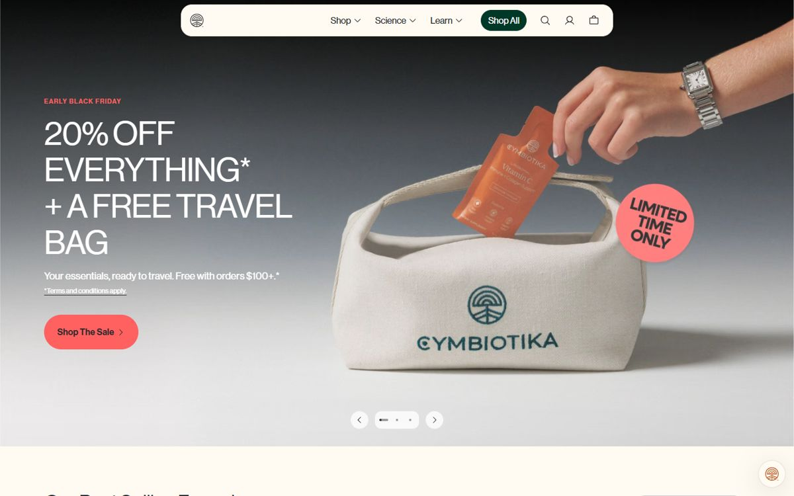
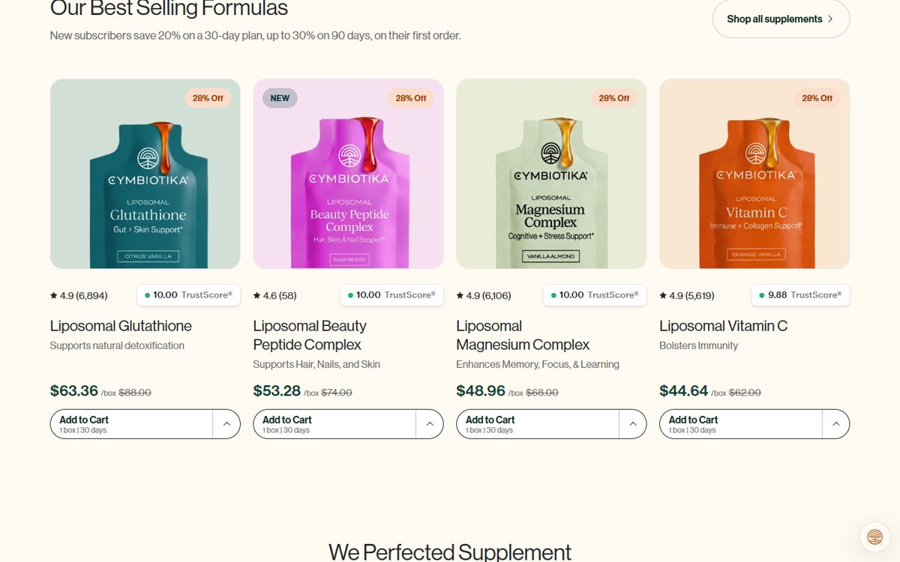
What inspires
Discount tiered by length: a 30-day plan gets 20%, a 90-day plan gets up to 30%. Also an expert "protocol": a ready-made set of products by goal.
Email capture
An email field in the footer, and a top bar "free travel bag on orders over $100".
First order and subscription
A discount for new subscribers on the first order, a gift above a certain amount, and one-click subscription choice on the card.
Ingredient transparency
One big number ("up to 3x better absorption") and an "our numbers don't lie" section with study results.
Idea for ASKEW
Put the subscription choice directly on the product card, and consider a tier: one month versus three months, with a small extra benefit for those who commit longer.
Moon Juice
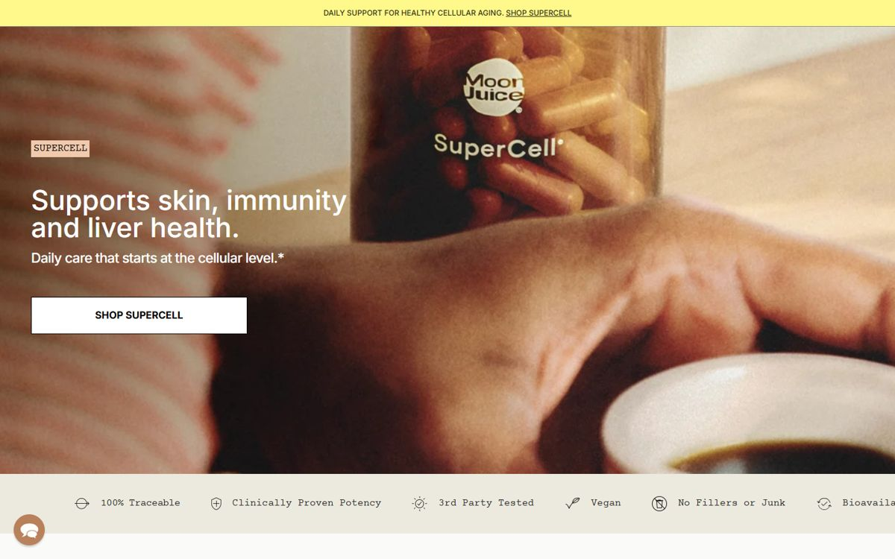
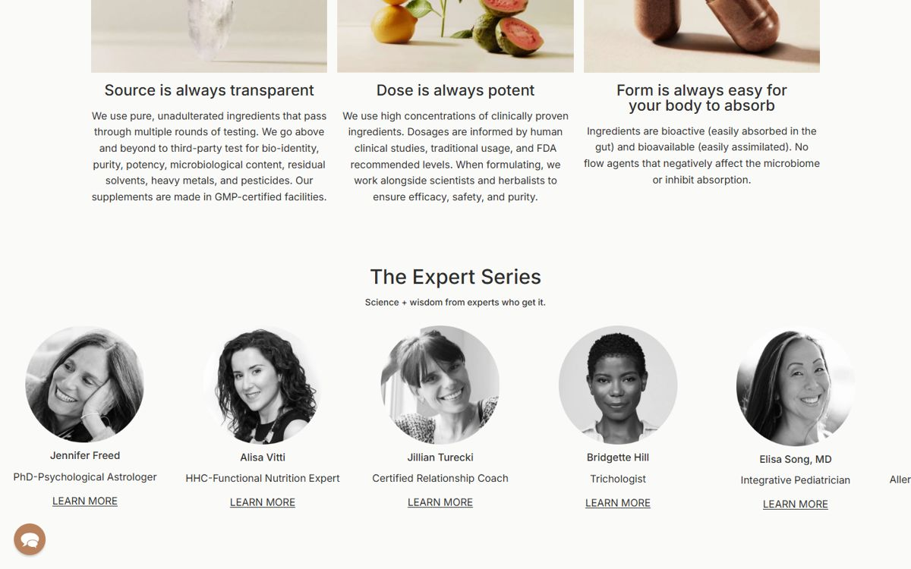
What inspires
No shouting. Everything is calm and luxurious, and that builds trust. A structure of three short promises that are easy to remember.
Email capture
"Tips, tricks, recipes and rituals" in the footer, and a 3-minute quiz that ends with 20% off.
First order and subscription
20% at the end of the quiz, "stack and save" (several products together at a discount), and a subscription.
Ingredient transparency
The three promises (source, dose, form), and a rich blog explaining each ingredient.
Idea for ASKEW
Build ASKEW's transparency section as three short promises: where it comes from, how much is in each serving, and why this particular form. Three sentences, no intimidating table.
Bloom Nutrition
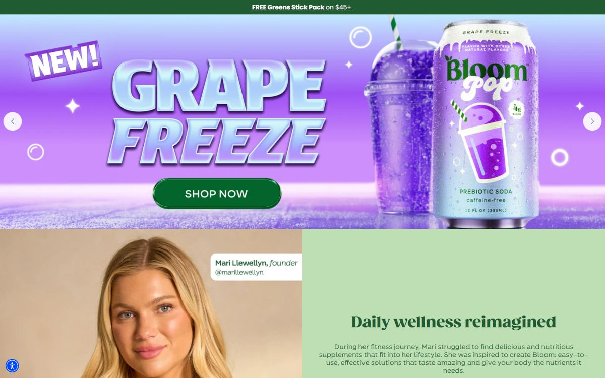
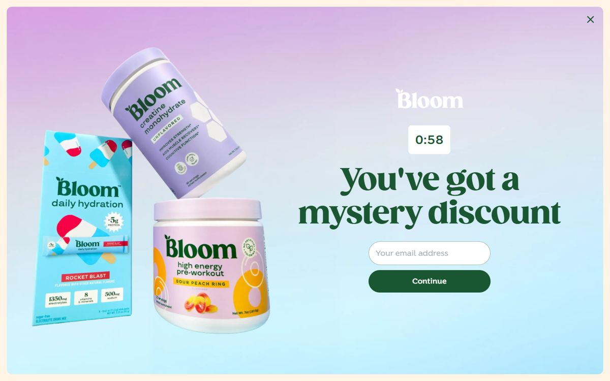
What inspires
Curiosity. They don't say how big the discount is, only that there is one. The timer creates a little urgency. And the founder is front and centre, with a name and a short story.
Email capture
A "mystery discount" with a one-minute timer. Email first, the discount is revealed after.
First order and subscription
"15% off for life when you subscribe", and a gift (a greens stick pack) on orders over $45.
Ingredient transparency
Relatively weak. The focus is on taste and looks, less on ingredients. This is where ASKEW can stand out.
Idea for ASKEW
The wording "for life" or "for a whole year" is gold for the founders' offer (25% for a year). And a gentle version of the surprise: "Sign up and see what's waiting in your first box", without a pressure timer.
5 ideas to take for ASKEW
- The founders' box, item by itemShow exactly what comes in the first order, with the crossed-out value next to each item and "25% off for a whole year" in large type. (Inspired by AG1, Bloom)
- A subscription without fearOne box with a short checklist: reminder before every delivery, pause, skip or cancel in one click, price per day. And the subscription choice right on the product card. (Inspired by Ka'Chava, Arrae, Cymbiotika, Huel)
- Transparency in three promises and a mapWhere it comes from, how much is in each serving, and why this form. And a small map of where the ingredients come from. (Inspired by Moon Juice, Ritual)
- "Built by us, for us"The founders with faces and a personal line, and language that calls things by their name, without shouting and without apologising. (Inspired by Friend of Dorothy, Arrae)
- A timeline: day 7, day 30, day 90What you feel and when, on the site and in subscriber emails, so customers don't leave before the product has had time to work. (Inspired by Seed)